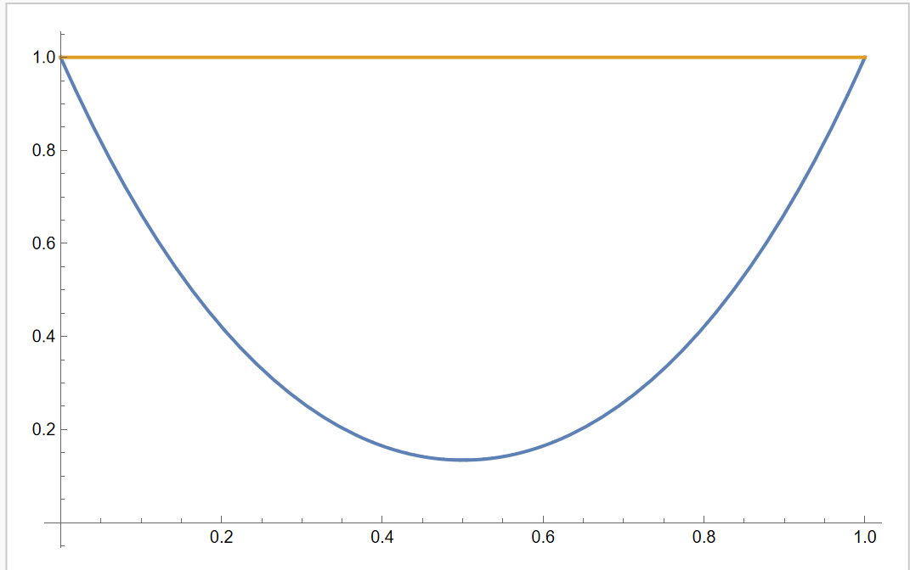
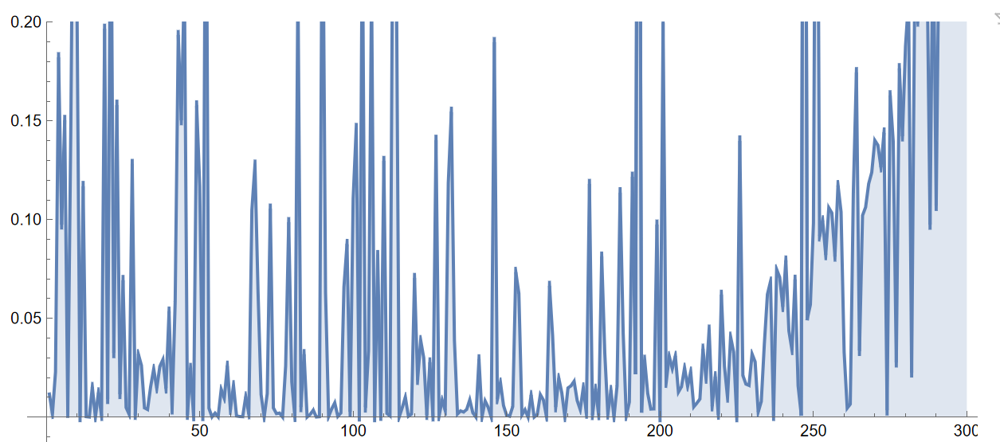

含参数一元函数的不等式问题
为一个区间，然后考虑一族函数并且。现在要证明不等式或者对任意成立。
- 相当于把二元函数的最值问题，转换为含参数的一元函数的最值问题。算是一种降维的操作。
- 有时候一些二元函数的不等式比如，证明都有的时候，如果我们可以把分解为那么只要令于是就可以把问题转换为含参数的一元函数不等式问题了。
- 参考视频:中值定理证明不等式的一个天然缺陷。
1. 一些基本问题
例子1.1
设证明
此处令，此函数图像如下：

因为函数的可微性，我们通过求导就发现的时候，函数单调增加，的时候函数单调减少，而为函数在的最小值点。由于
- 所以。
- 。
所以不等式就得到了证明。
- 如果此处我们把当成变量作为参数来考虑含参数的函数的性质，那么这个问题直接联系到Power mean及其性质。假设我们已知关于变量的函数是一个单调增加的函数，那么用Power mean及其性质当中的符号来表示，如果固定那么反过来
有些看起来是二元含参数的不等式问题，可以通过一些简单的换元转换为一元含参数的不等式问题：
例子1.2
令那么不等式成立。
这个问题：
- 直接看可以理解为证明在集合上非正。
- 如果把当成参数，那么问题是一个含参数的二元函数的最值问题，即这还是不够简单。我们发现当的时候，不等式显然相等。于是只需要讨论的情况，那么我们可以利用目标不等式的齐次性，两边除从而转换为证明下面的结果：
引理1.3
令那么不等式成立。
令其中，对有因为并且由幂函数的单调性，我们知道。因此函数在上严格单调减少，因此对任意成立，即
2. 中值定理进度上的缺陷
例子2.1
有不等式
如果我们按照“含参数函数的不等式”去思考，我们可以考虑含参数的函数其导数为解这个有理多项式类型的不等式，可以得到结论：当的时候。也就是说函数在上单调增加，于是想到只要左端点的值大于等于0，那么任意都能使得。实际上于是不等式得到了证明。
不过“例子2”的一个更为常见的做法是利用“中值定理”。因为很难不然人想到的中值定理。Lagrange中值定理告诉我们，存在使得然后我们想到加强命题，因为，那么如果我们可以证明大于目标不等式，那么整个证明就可以结束了。事实上这种加强是奏效的，因为对是成立的。
但是我们要说这种借由中值定理来证明的不等式存在一个局限性：
借由中值定理证明不等式的局限性
这种局限性根植于中值定理本身。函数的中值定理所产生的值在一个区间中是不确定的，所以当我们去估计形如上界或下界的时候，我们利用的时候，我们实际上是在加强不等式。
- 我们的逻辑是（假设我们要证明下界）：如果我们给到在上的一个下界估计，并且这个下界比目标下界要更精确，更为接近，那么一切就是成功的。 但是由于是不确定的，因此这种估计一定会有严格大于0的误差，除非导数是常函数。这就导致一个明显的局限性：如果我们的目标估计是较为精确的，那么这条路可能完全行不通。
- 首先“例子1.1”当中这种不等式在函数最值点处取得的不等式，在个别点处的误差是0，这就导致这种问题用中值定理来证明是不可能的。
- 再比如“例子2.1”当中，如果我们要证明如果我们通过导数来分析含参数函数这是可以行得通的。但是如果我们考虑中值定理，我们相当于是证明但是由于我们根本不确定的更为精确的信息，我们无奈只得加强不等式，企图证明，但是这会导致，这就说明这种加强根本不可能。
我们再看下一个例子：
例子2.2
设,证明
-
此处其实也体现出，单纯求导然后解导数为0的方程的局限性。因为如果考虑含参数函数其导数中始终含有函数，含有这种函数的方程通常比较难解。不过此处我们可以直接利用函数严格凸性，然后使用Jensen不等式：这里也可以借用Hermite-Hadamard不等式与函数凸性当中的结果去说明，以至于还可以得到另一边的不等式
-
这里不能考虑中值定理，因为中的并不确定。如果要得到目标不等式，考虑到的严格单调性，我们需要保证才行。
例子2.3
对于，有
借用1.2 判断不等式是否成立当中的经验，我们可以迅速用下面的代码快速检验是否存在反例，以确定这个不等式是否值得我们证明：
Clear[m, data]
m = 300;
data = Sort@RandomReal[{-1, 1}, {m, 2}];
DiscretePlot[(ArcSin[data[[k]][[2]]] -
ArcSin[data[[k]][[1]]])/(data[[k]][[2]] - data[[k]][[1]]) -
1/Sqrt[1 - ((data[[k]][[1]] + data[[k]][[2]])/2)^2], {k, 1, m},
PlotRange -> {-0.1, 0.2}]这里绘制的是的图像，其中是一对随机数。我们可以通过图像

我们可以快速确定，这个不等式多半是对的（因为的值在300对随机数的实验中，始终在第一象限），于是接下来我们尝试证明。- 首先Lagrange中值定理是可行的吗？我们会提出这样的问题，因为的形式的确会让人联想到中值定理。然而由于上面的讨论，我们对此并不抱有太大的期望，因为Lagrange中值定理在这种估计问题当中精度无法太高。事实上也的确如此，要使得Lagrange中值定理可以证明该不等式，必须保证这便意味着我们必须保证。这个信息肯定是对的，因为如果不是这样那么本例当中的不等式就是错误的。但是这个信息Lagrange中值定理给不了，必须结合函数的其他信息才可以得到。
- 可以确定是，如果我们采用构造辅助的含参数的函数，这个问题一定可以解决，只不过是论证&计算难度的高低区别罢了。一种常规的构造方法是定义函数然后我们证明在的范围内对任意的成立。不过为了使得含参数函数的微分更简单，不包含任何超越函数，更为明智的构造方式是这样我们便可以求得其中。解不等式得到。也就是说对于固定参数而言，函数在中严格单调增加，于是我们只需要计算极限值，如果极限值大于等于0，那么此例当中的不等式就成立。事实上于是我们得到于是例子当中的不等式成立。
是否还有更为巧妙地做法？前面地例子给了我们一个经验，我们可以从函数图像地几何特征入手。如果我们定义的话，本例中的不等式实际上可以写作如果我们把不等式左边写成积分形式，那么原本的不等式变成了根据Hermite-Hadamard不等式与函数凸性我们想到只要证明是一个严格凸的函数即可。这是一定的，因为的解集为。因此此例当中的不等式成立。